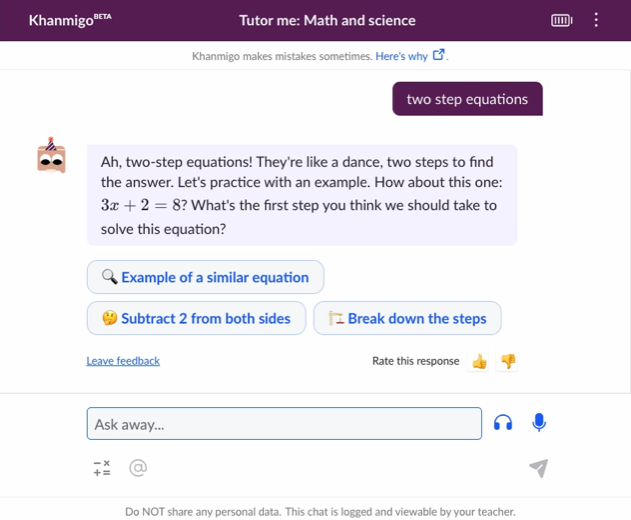
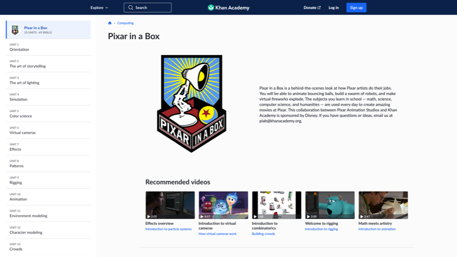
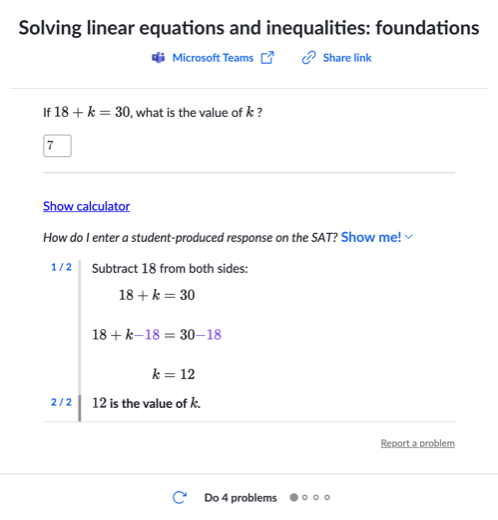
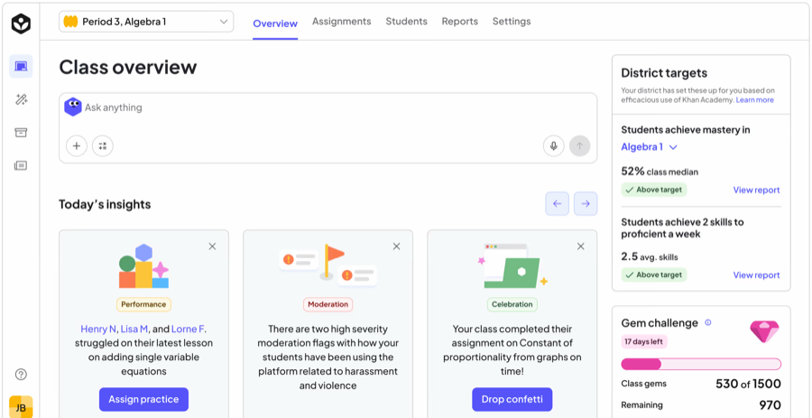
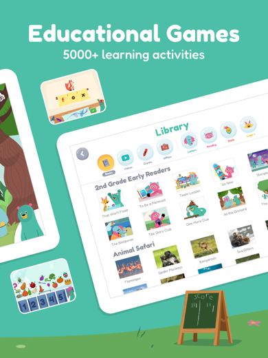
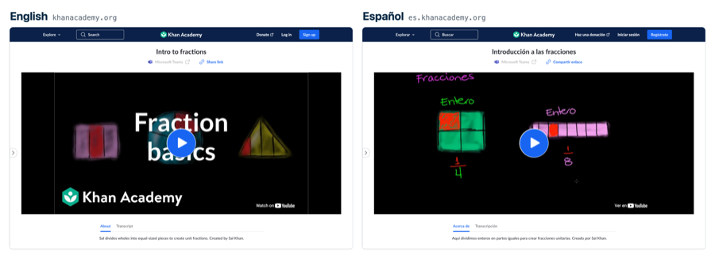
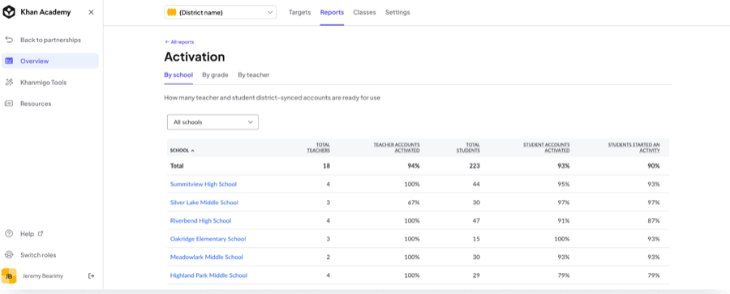

Find the one thing that most clearly cost real money to build, and note why you think so. Tap a card to see what to look for. Nothing here is scored.

It answers in real time, in whatever a student actually typed, the way a private tutor would, not a page of pre-written text.
Source: khanmigo.ai

This is studio-quality animation, made in collaboration with Pixar's own artists, not a screen recording of a whiteboard.
Source: Khan Academy, Pixar in a Box

This is official practice content built with the organization that owns the SAT, kept current every time College Board changes the test.

A teacher can see per-student progress across an entire class, updating as students work, not a static end-of-unit report.

This app runs on its own cast of original characters, more than 5,000 games and activities, and a library of storybooks and videos built for kids who can't read yet.
Source: Khan Academy Kids, Google Play

Khan Academy's content reaches learners in more than 190 countries, translated into more than 55 languages, not just recorded once in English and left there.
Sources: Khan Academy, Math library and Khan Academy Annual Report, SY24 to SY25

A district partnership comes with aggregated reporting across every school and classroom, rostering set up through Clever or ClassLink, and a dedicated implementation manager assigned to that district, not a generic support inbox.
Source: Khan Academy Blog, Becoming a Khan Academy Districts Partner